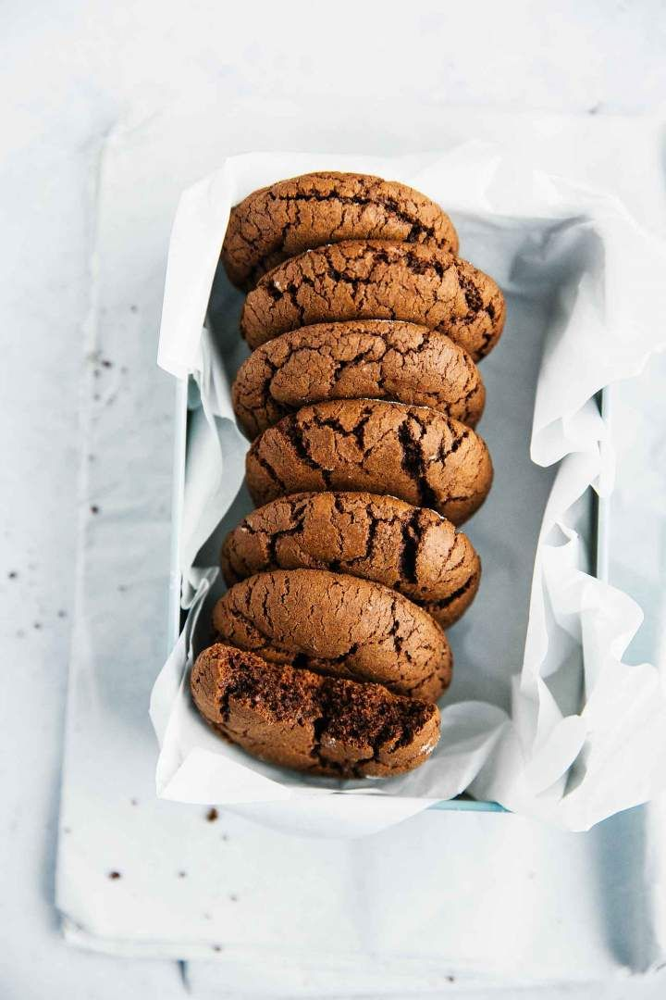

Deserturi

Biscuiti

Ingrediente:
- 450 g făină;
- 200 g ciocolată cu lapte;
- 200g unt;
- 200 g zahăr brun;
- 100 g zahăr alb tos;
- 100 g picături de ciocolată neagră
- 2 ouă;
- 1 praf de sare;
- 1 esență vanilie.
Preparare:
- Ciocolata se topește într-un vas pe baie de abur . Untul (la temperatura camerei ) se mixează cu zahărul vanilat și zahărul pudră până se spumează bine, devine ca o cremă pufoasă.
- Adaugăm praful de sare , ouăle și mixăm pănă obținem o compoziție omogenă.
- Adaugăm treptat făină + praful de copt , amestecăm până se încorporează și obținem un aluat omogen.
- Se tapetează o tavă cu hârtie de copt.
- Introducem tava în cuptorul preîncălzit și coacem fursecurile maxim 10 min.
Rating:
Poftă bună!